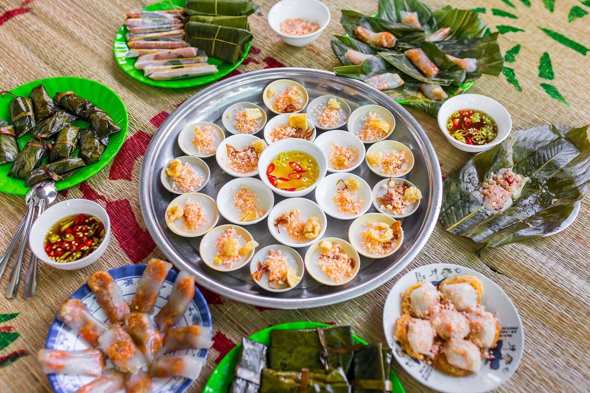
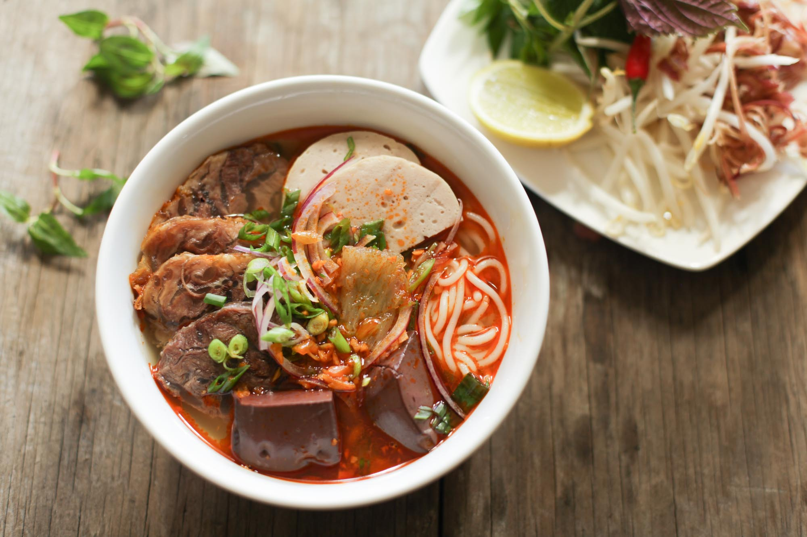
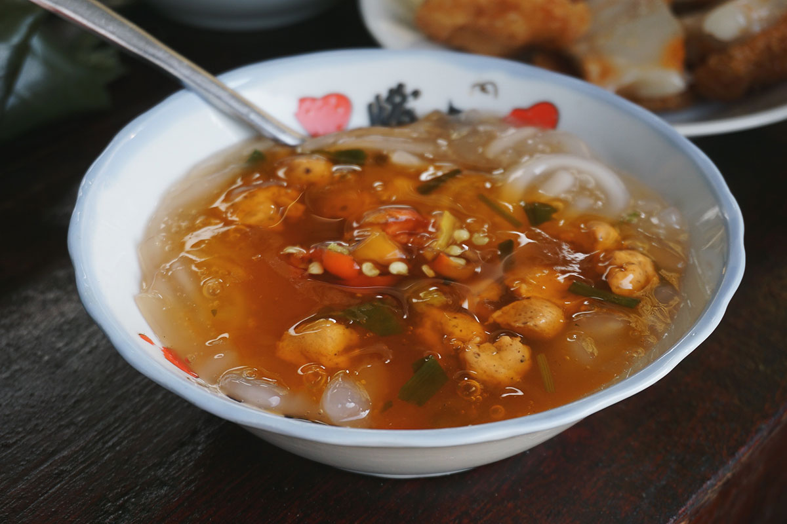

.png)
Bánh bèo, bánh nậm, bánh lọc là những món ăn dân dã, đặc trưng của ẩm thực Huế, mang đậm hương vị truyền thống miền Trung.
Không chỉ hấp dẫn bởi hương vị, các loại bánh này còn gây ấn tượng bởi cách trình bày tinh tế, mang nét đẹp nhẹ nhàng, thanh tao như chính con người xứ Huế. Khi thưởng thức, người ăn có thể cảm nhận được sự hòa quyện hài hòa giữa vị mặn, ngọt, béo và cay của nước chấm. Những món bánh này thường xuất hiện trong các bữa ăn gia đình, quán nhỏ ven đường hay cả những dịp tụ họp thân mật. Dù giản dị, chúng vẫn giữ được sức hút riêng, khiến ai từng thưởng thức đều khó quên. Đây không chỉ là món ăn mà còn là một phần của văn hóa ẩm thực đặc sắc, góp phần làm nên nét riêng cho vùng đất cố đô.

Bún bò Huế là một trong những món ăn nổi tiếng nhất của ẩm thực Huế, mang hương vị đậm đà và đặc trưng khó lẫn. Món ăn gây ấn tượng với nước dùng được ninh từ xương bò, kết hợp với sả và mắm ruốc, tạo nên mùi thơm rất riêng. Sợi bún to, dai, ăn cùng thịt bò, giò heo và chả, mang đến sự phong phú về nguyên liệu và hương vị. Khi thưởng thức, người ăn thường thêm rau sống, ớt và chanh để tăng độ hấp dẫn, tạo nên sự hòa quyện giữa vị cay, mặn, ngọt hài hòa. Không chỉ là món ăn quen thuộc trong đời sống hằng ngày, bún bò Huế còn được xem là biểu tượng ẩm thực của vùng đất cố đô. Với hương vị đậm đà và cách chế biến công phu, món ăn này đã chinh phục không chỉ người dân địa phương mà còn cả du khách trong và ngoài nước.

Bánh canh Nam Phổ là một món ăn dân dã đặc trưng của ẩm thực Huế, mang đậm hương vị miền Trung. Món ăn gây ấn tượng với phần nước dùng sánh nhẹ, có màu đỏ cam hấp dẫn được nấu từ tôm và gạch cua. Sợi bánh canh mềm, dẻo, không quá dai, hòa quyện cùng phần nhân tôm và thịt băm đậm đà. Khi ăn, người ta thường thêm chút ớt cay để tăng hương vị, tạo nên sự cân bằng giữa vị ngọt, mặn và cay. Bánh canh Nam Phổ thường được bán ở những quán nhỏ ven đường, mang lại cảm giác gần gũi, bình dị. Dù không cầu kỳ trong cách chế biến, món ăn vẫn chinh phục thực khách bởi sự đậm đà và hấp dẫn riêng. Đây không chỉ là một món ăn quen thuộc mà còn là nét đặc sắc trong văn hóa ẩm thực của xứ Huế.

Cà phê muối là một thức uống độc đáo, góp phần làm phong phú thêm văn hóa ẩm thực của Huế. Điểm đặc biệt của món này nằm ở lớp kem mặn nhẹ phủ trên bề mặt cà phê, tạo nên sự kết hợp thú vị giữa vị đắng, ngọt và mặn. Cà phê bên dưới thường đậm đà, hòa quyện cùng lớp kem béo mịn giúp hương vị trở nên cân bằng và dễ uống hơn. Khi thưởng thức, vị mặn không hề lấn át mà còn làm nổi bật vị ngọt dịu và giảm bớt độ gắt của cà phê. Không gian thưởng thức cà phê muối thường yên tĩnh, nhẹ nhàng, rất phù hợp để thư giãn và tận hưởng nhịp sống chậm. Dù là một biến tấu hiện đại, cà phê muối vẫn mang đậm dấu ấn riêng của Huế, khiến nhiều người tò mò và yêu thích. Đây không chỉ là một thức uống mà còn là trải nghiệm thú vị đối với bất kỳ ai khi đến với vùng đất cố đô.